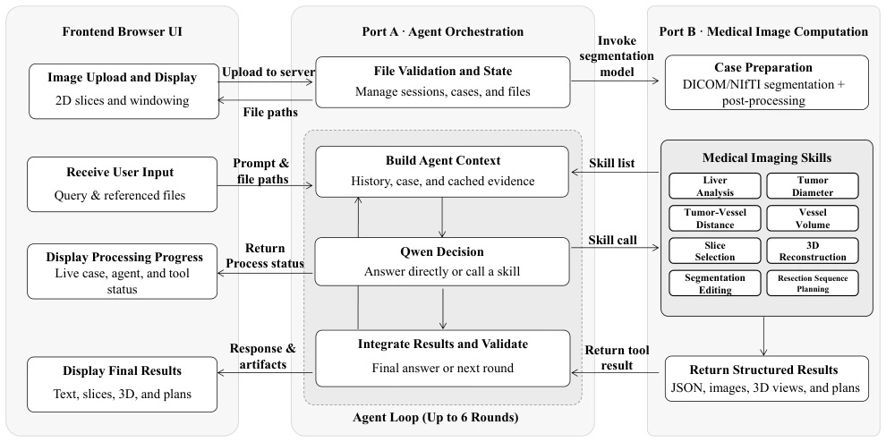
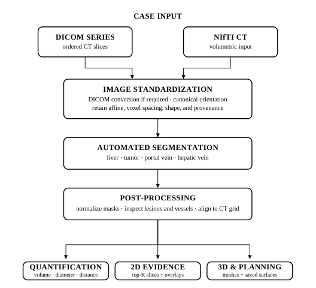
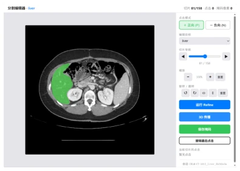
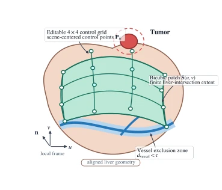
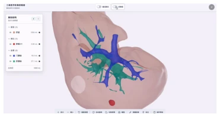
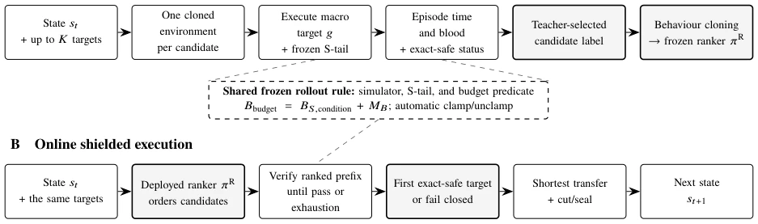
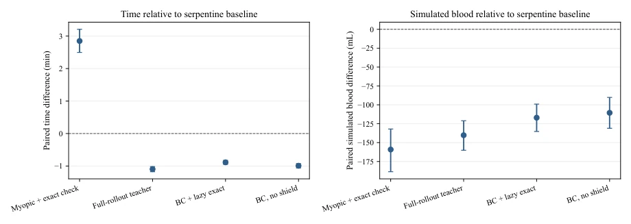
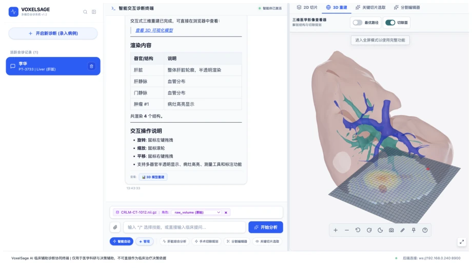
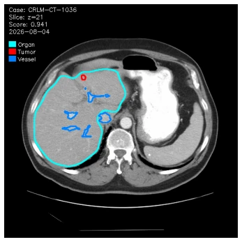

VoxelSage 试图用大模型当“外科医生助理”，但核心逻辑其实很诚实：它深知 LLM 算不准物理距离，所以搞了个“双端口”架构，把“动嘴”和“动手”彻底分开。Port A 负责耍嘴皮子（LLM 编排），Port B 负责干脏活（精确计算），这招“物理隔离”确实聪明，有效避免了 LLM 一本正经胡说八道生成虚假的毫米数。不过，别被“智能规划”的噱头骗了，它的“学习”其实是在一个冻结的 2D 模拟器里搞行为克隆，离真实手术室的复杂环境还有十万八千里。它自称“临床安全验证”，但作者自己都在免责声明里把话说死：这只是仿真器层面的性能展示，离真正上手术台还早着呢。这更像是一个展示“多模态 Agent 如何正确调用工具”的工程演示，而非真正的临床决策系统。
VoxelSage attempts to employ large models as "surgical assistants", yet its core logic is remarkably candid: it recognizes that LLMs cannot accurately compute physical distances, thus implementing a "dual-port" architecture that completely decouples "verbalization" from "action". Port A handles verbalization (LLM orchestration), while Port B manages the heavy lifting (precise calculation). This "physical isolation" strategy is indeed astute, effectively preventing LLMs from fabricating false millimeter measurements with a straight face. However, do not be misled by the "intelligent planning" gimmick; its "learning" is essentially behavior cloning within a frozen 2D simulator, far removed from the complexity of a real operating room environment. Although it claims "clinical safety validation", the authors themselves explicitly state in the disclaimer that this is merely a performance demonstration at the simulator level, still far from actual surgical deployment. This resembles more an engineering demonstration showcasing "how multimodal Agents correctly invoke tools" rather than a genuine clinical decision system.
研究动机Motivation
术前肝脏肿瘤评估需要一套完整的流程：从分割、物理测量、可视化证据生成到切除规划，且所有数据必须基于同一 CT 体积和物理坐标系。现有方法往往各自为战：VISTA3D、TotalSegmentator 等工具专注于分割（He et al. 2025; Wasserthal et al. 2023），CT-CLIP 尝试连接文本与体积（Hamamci et al. 2026），而 CT-Agent 和 3DMedAgent 虽然组织了工具，但缺乏一个以病例为中心、将图像准备、测量、证据和规划串联起来的统一工作流（Mao et al. 2026; Wang et al. 2026b）。更关键的是，现有的语言模型无法可靠地从 CT 中直接计算物理测量值，容易导致幻觉。IDEAL 框架虽然提出了决策支持，但未解决工具协同与数据一致性的工程难题（Wang et al. 2026a）。因此，亟需一个系统，既能利用 LLM 的推理能力，又能确保几何计算的精确性，并实现从数据到规划的闭环。
Preoperative liver tumor assessment requires a complete workflow: from segmentation, physical measurement, visualization evidence generation, to resection planning, with all data based on the same CT volume and physical coordinate system. Existing methods often operate in silos: tools like VISTA3D and TotalSegmentator focus on segmentation (He et al. 2025; Wasserthal et al. 2023), CT-CLIP attempts to link text with volume (Hamamci et al. 2026), while CT-Agent and 3DMedAgent, although organizing tools, lack a case-centric unified workflow that links image preparation, measurement, evidence, and planning (Mao et al. 2026; Wang et al. 2026b). More critically, existing language models cannot reliably calculate physical measurement values directly from CTs, prone to hallucinations. Although the IDEAL framework proposes decision support, it fails to address the engineering challenges of tool collaboration and data consistency (Wang et al. 2026a). Therefore, a system is urgently needed that can leverage LLM reasoning capabilities while ensuring geometric calculation precision and achieving a closed loop from data to planning.

Figure 1: Dual-port collaboration workflow connecting the browser, Port A agent orchestration service, external language model, and Port B medical image computation service.
方法Method
VoxelSage 采用“双端口”架构，将语言编排与图像计算解耦。Port A（Agent Orchestration）负责解释用户请求、维护病例上下文、选择技能并整合结果；Port B（Medical Image Computation）则执行具体的图像分割、量化计算和 3D 重建。数据流上，用户上传 DICOM/NIfTI 后，Port B 先进行标准化（统一 RAS 方向、保留仿射矩阵）和自动化分割（默认 VISTA3D），生成对齐的掩码。随后，Port A 根据请求调用 Port B 的八种内置技能：包括定量测量（体积、直径、距离）、2D 证据生成（切片选择）、交互式分割修正（MedSAM2 辅助）、3D 重建（Marching Cubes）及切除规划。在切除规划中，系统利用双三次 Bézier 曲面定义切除区域，并通过 4x4 控制网格允许用户编辑。核心创新在于“模拟器屏蔽（Simulator-Shielded）”的序列规划：训练一个冻结的行为克隆（Behavior Cloning）神经排序器，根据当前状态对候选切除目标进行排序，同时结合一个基于冻结 2D 模拟器的“盾牌”，在每一步执行前检查是否违反预设约束（如出血量预算），确保生成的切除序列在仿真环境中安全可行。
VoxelSage adopts a "dual-port" architecture, decoupling language orchestration from image computation. Port A (Agent Orchestration) is responsible for interpreting user requests, maintaining case context, selecting skills, and integrating results; Port B (Medical Image Computation) executes specific image segmentation, quantitative calculation, and 3D reconstruction. In the data flow, after users upload DICOM/NIfTI, Port B first performs standardization (unifying RAS orientation, preserving affine matrix) and automated segmentation (default VISTA3D), generating aligned masks. Subsequently, Port A calls Port B's eight built-in skills according to the request: including quantitative measurement (volume, diameter, distance), 2D evidence generation (slice selection), interactive segmentation correction (MedSAM2 assisted), 3D reconstruction (Marching Cubes), and resection planning. In resection planning, the system utilizes bicubic Bézier surfaces to define the resection area and allows user editing via a 4x4 control grid. The core innovation lies in "Simulator-Shielded" sequence planning: training a frozen Behavior Cloning neural ranker to rank candidate resection targets based on the current state, while combining a "shield" based on a frozen 2D simulator to check for violations of preset constraints (such as blood loss budget) before each step execution, ensuring the generated resection sequence is safe and feasible within the simulation environment.

Figure 3: Case preparation and medical-image analysis pipeline. DICOM or NIfTI input is normalized into a canonical case volume. Segmentation and post-processing then produce affine-aligned artifacts that are reused by on- demand quantitative, two-dimensional evidence, and three- dimensional planning skills.

Figure 5: Case-specific editor for interactive segmentation correction, showing the selected structure mask overlaid on an axial slice and the controls (slice navigation, structure selection, positive/negative point prompts, view transforma- tion, single-slice refinement, bounded 3D propagation, undo, and save). The displayed mask remains a working result until the user saves it.

Figure 7: Geometric representation of an editable bicubic Bézier resection surface. The 4 × 4 control grid is stored in scene-centered coordinates and mapped back to CT world coordinates through the case center offset. Tumor-margin refinement and the downstream vessel-proximity threshold are shown as distinct geometric checks.

Figure 6: Interactive 3D reconstruction built from the case masks, showing the semi-transparent liver, tumor, portal vein, and hepatic vein in a shared coordinate frame, with structure toggles, navigation, distance measurement, annota- tion, and mask-derived volumes.
The study utilized CT data from colorectal cancer liver metastasis (CRLM) in the TCIA public dataset for evaluation. The experiments were divided into two parts: first, a single-case end-to-end workflow demonstration to verify the collaboration of system modules; second, evaluating the performance of the sequence planning algorithm based on 256 unseen simulation scenarios. The baseline adopted deterministic Serpentine scanning (Serpentine baseline). Results showed that after introducing the behavior cloning ranker plus simulator shielding, the average simulation time decreased from 34.274 minutes to 33.388 minutes (a reduction of 2.59%), and the average simulated blood loss decreased from 300.847 mL to 183.852 mL (a reduction of 38.89%). Ablation experiments compared different controllers (C0-C5), confirming that the learned ranker combined with the shielding mechanism outperformed non-learned heuristic strategies. Notably, the evaluation was strictly limited to the simulator level, involving no real clinical data or surgical safety validation, and the system was only targeted at colorectal cancer liver metastasis, without verifying generalization capabilities to primary liver cancer.

Figure 8: Offline teacher labelling and online shielded execution. For each state, the generator returns up to 𝐾candidates. Offline, one environment clone per candidate executes the macro target and frozen S-tail; the resulting full-episode time, simulated blood, and exact-safe status determine the teacher label used to train 𝜋R. Online, the frozen ranker orders candidates and the lazy exact shield checks them in that order, stopping as soon as one passes the same simulator, S-tail, and budget predicate. If no candidate passes, execution terminates as infeasible. “Exact safety” refers to this frozen simulator predicate, not to physiological or clinical safety.

Figure 9: Controller effects on the 256-scene post-freeze replication set relative to the deterministic serpentine baseline. Points show paired means and whiskers show 95% paired-bootstrap confidence intervals. Simulated blood is an uncalibrated environment quantity.
其他图片Other Figures

Figure 2: Integrated browser workspace for illustrative case CRLM-CT-1012. The panels combine case management, dialogue, skill execution, and case-linked evidence; the reconstruction panel shows the liver, tumor, portal vein, and hepatic vein in a shared scene.

Figure 4: Two-dimensional evidence returned by the slice_selection skill for illustrative case CRLM-CT-1036. The ranked axial slice shows con- tours for the liver (cyan), tumor (red), and vessels (blue).